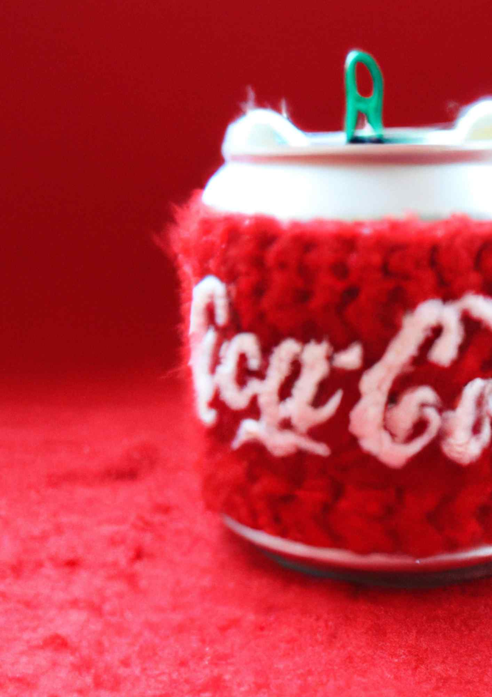
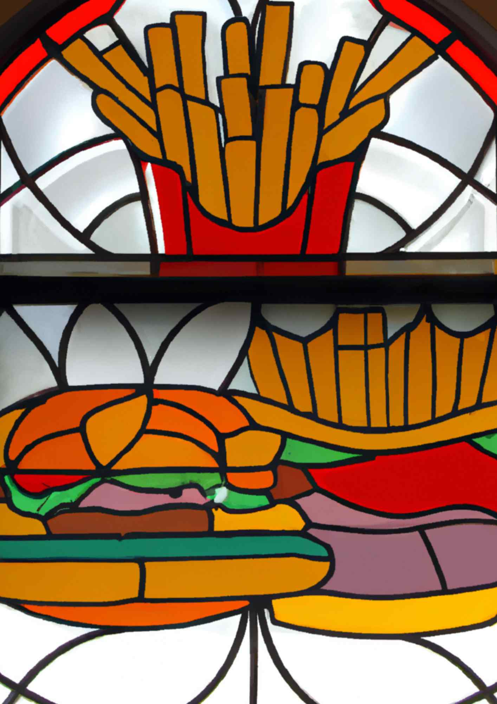
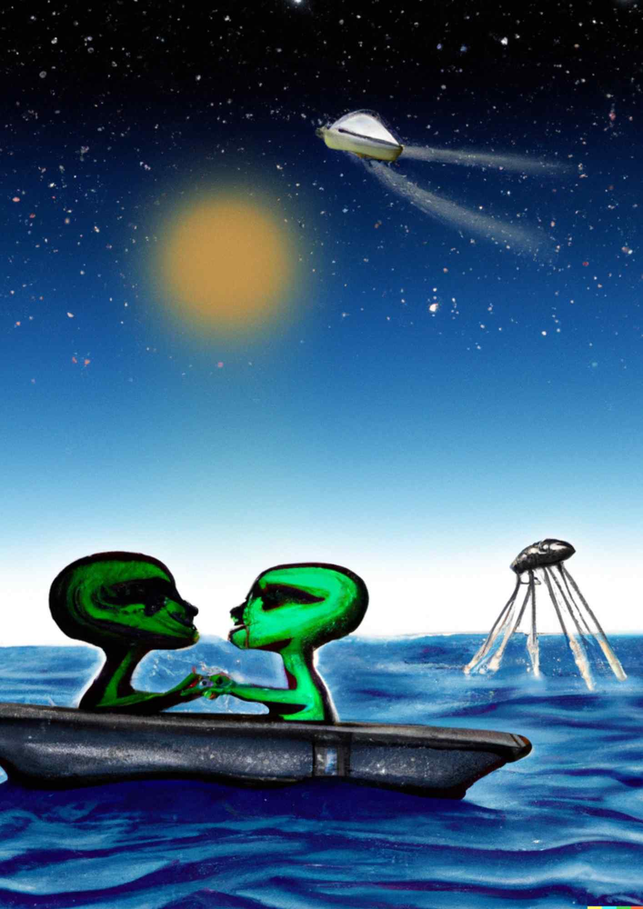
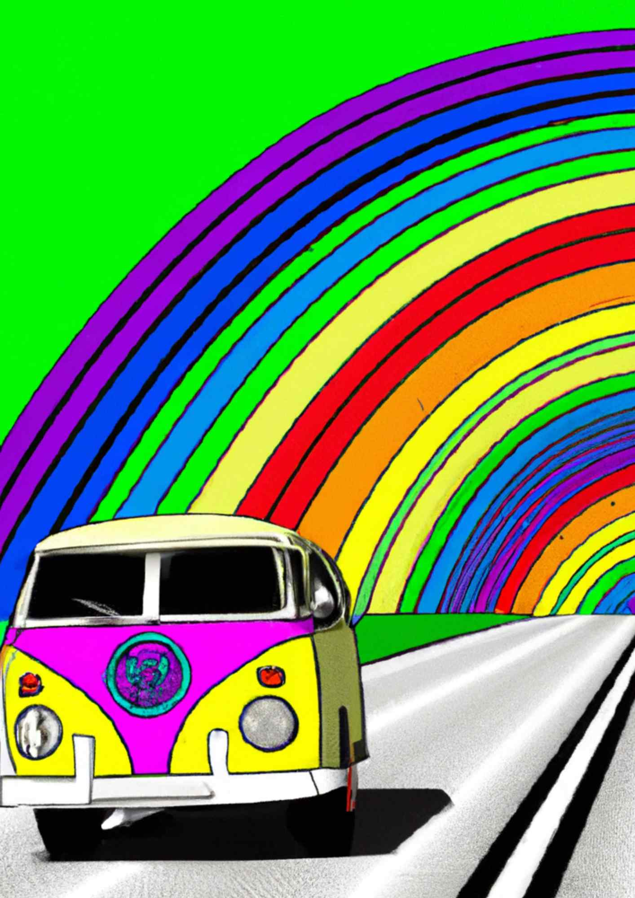
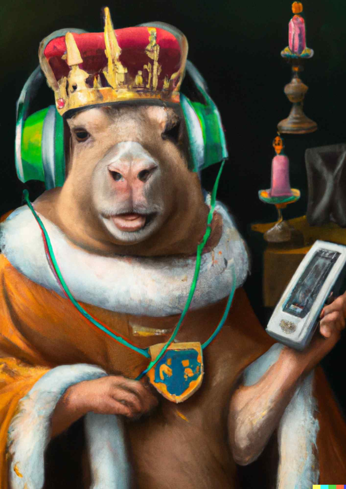

One-Off
Ask: A single creative execution of my choice
With every second scroll being an ad, 78% of Americans report ad fatigue and have an average attention span
of 8 seconds
To compete with our current world, I know I need to keep my brain up to par and stretch my visual creativity
to its fullest
so, I present to you
THISIMAGEDOESNOTEXIST.
Taking inspiration from websites like This Person Does Not Exist and
These Lyrics Do Not Exist
These are visual concepts from classic art styles that I am fairly certain, in a 99.5% and quick google kind
of way, have never been imagined before.
Five stars, totally recommend. Enjoy some of my finest AI-brain-stretching-creativity-enhancing play below.
Van Gogh brushing his teeth as he paints starry night, oil painting
Coca-Cola can made entirely out of wool with a red background, hyper realistic
French fries and hamburger in a stained-glass window, hyper realistic

Knock-off versions of BYU Adlab professors, 3D render
Two aliens having a romantic moment as the titanic sinks into the night, digital art
VW bus riding into a rainbow sunset, vaporwave art style.
An oil painting portrait of a capybara wearing medieval royal robes and an ornate crown on a dark background listening to music on an iPod, digital art